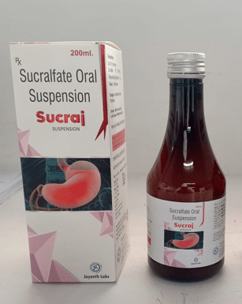

Indications:-GERD
- 
Sucralfate Suspension

Sucralfate Suspension
SUSPENSION PRESENTATION:
Each 10 ml contains:
Sucralfate 1000 MG

Sucralfate is a medication that is widely used to prevent and treat a number of diseases in the gastrointestinal tract such as duodenal ulcers gastro-esophageal reflux disease (GERD), gastritis, peptic ulcer disease, stress ulcer, in addition to dyspepsia .It is considered a cytoprotective agent, protecting cells in the gastrointestinal tract from damage caused by agents such as gastric acid, bile salts, alcohol, and acetylsalicylic acid (aspirin), among other substances.
Sucralfate has been shown to be a well-tolerated and safe drug. It is sold under many brands and is available in both tablet and suspension forms. It was approved by the FDA 1982 in tablet form, and in 1994 for the suspension form.

The sucralfate is used for the treatment of active duodenal ulcer for up to 8 weeks, purpose of maintaining healing and preventing recurrence.
Sucralfate is also used in the prevention treatment of gastro-esophageal reflux disease GERD, gastritis, peptic ulcer disease, stress ulcer, in addition to dyspepsia

The mechanism of action of this drug in the healing duodenal ulcers is not yet completely defined, however, there are several probable mechanisms that adequately describe the healing activity of sucralfate. There is evidence that sucralfate acts locally to aid in tissue healing, and not systemically.

This drug aids in the healing of duodenal ulcers, relieving painful inflammation by creating a protective mechanical barrier between the lining or skin of the gastrointestinal tract and damaging substances . In addition, sucralfate acts to increase levels of growth factors locally, and also causes an increase in prostaglandins which are important in the healing of the mucosa (lining) of the gastrointestinal tract.

Absorption:This drug is absorbed from the gastrointestinal tract in very minimal quantities.The adsorbed sulfated disaccharide is excreted in the urine .This drug contains aluminum and after the administration of 1 g of sucralfate 4 times per day, about 0.001% to 0.017% of this aluminum content is absorbed in patients with normal renal function.
Metabolism: This drug is absorbed in very small quantities and is not significantly metabolized
Elimination: The negligible amount of this drug that is absorbed is excreted mainly in the urine within 48 hours.

- constipation, diarrhea
- nausea, vomiting, upset stomach;
- itching, rash
- dizziness, drowsiness
- sleep problems insomnia
- headache
- back pain

- Dialysis, renal failure, renal impairment.
- Diabetes mellitu
- Dysphagia, gag reflex depression
- Children, infants, neonates
- Pregnancy
- Breast-feeding